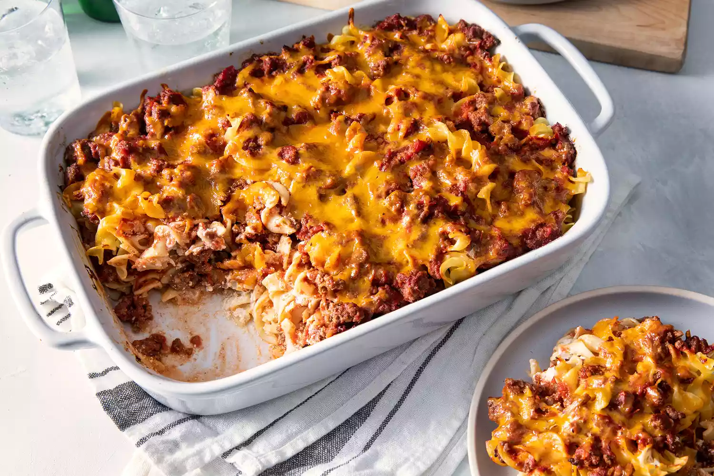

Ground beef casserole

Grandma's ground beef casserole
Nobody makes casserole like your Grandma. That's why this old-fashioned
ground beef casserole with egg noodles is always such a hit! It's made
with ingredients you already have on hand (and, of course, a little bit of
love).
Ingredients
- 1 pound ground beef
- 2 (15 ounce) cans tomato sauce
- 1 teaspoon white sugar
- 1 teaspoon garlic salt
- 1 teaspoon salt
- 1 (8 ounce) package egg noodles
- 1 cup sour cream
- 3 ounces cream cheese, softened
- 1 large white onion, diced
- ½ cup shredded sharp Cheddar cheese, or more to taste
Steps
-
Heat a large skillet over medium-high heat. Cook and stir ground beef in
the hot skillet until browned and crumbly, 5 to 7 minutes; drain and
discard grease.
-
Mix tomato sauce, sugar, garlic salt, and salt into the ground beef;
simmer until flavors blend, about 20 minutes. Remove from the heat,
cover the skillet, and cool to room temperature.
-
While the sauce is cooking, bring a large pot of lightly salted water to
a boil. Cook egg noodles in the boiling water, stirring occasionally
until cooked through but firm to the bite, 7 to 9 minutes. Drain.
-
While the egg noodles are cooking, preheat oven to 350 degrees F (175
degrees C). Grease a 9x13-inch casserole dish.
- Mix sour cream, cream cheese, and onion together in a bowl.
-
Layer 1/2 of the egg noodles into the prepared casserole dish. Top with
1/2 of the sour cream mixture, then 1/2 of the ground beef mixture.
Repeat layers once more. Sprinkle Cheddar cheese over top.
-
Bake in the preheated oven until cheese is melted and golden brown, 25
to 30 minutes.